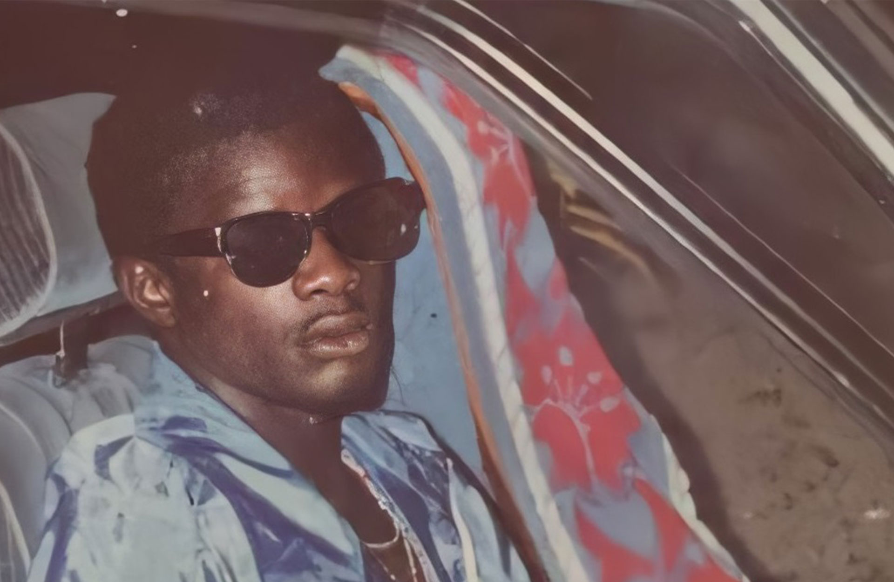

MAGAZINE
Verhalen over Surinaamse muziek, artiesten en cultuur.
ALLES
GESCHIEDENIS
INTERVIEW
CULTUUR
STUDIO
PLAYLISTS

Geschiedenis
12 Feb 2026
De Geboorte van Kaseko
Kaseko — het kloppende hart van Surinaamse muziek. Hoe een genre ontstond uit de fusie van Creoolse tradities, Afrikaanse ritmes en Caribische invloeden, en waarom het tot op de dag van vandaag onweerstaanbaar blijft.
LEES MEER →
Interview
28 Jan 2026
Producer Spotlight: De Sound van Paramaribo
Over samplen van kawina, analoge synthesizers en het bewaken van culturele authenticiteit in de moderne productiestudio.
LEES MEER →
Cultuur
10 Jan 2026
Vinyl Revival: Waarom Analoog Wint
Hoe het vinyl revival ook de Surinaamse muziekcultuur raakt, en wat Traditional Records doet om de collectie voor toekomstige generaties te bewaren.
LEES MEER →
Studio
5 Dec 2025
Studio Sessions: Van Demo tot Plaat
We volgden drie artiesten door het complete opname- en mixproces in de Traditional Records studiomuren.
LEES MEER →
Playlists
20 Nov 2025
De 25 Beste Surinaamse Platen Aller Tijden
Onze redactie selecteerde de 25 albums en singles die elke muziekliefhebber minimaal één keer gehoord moet hebben.
LEES MEER →
Geschiedenis
8 Oct 2025
Winti Muziek: Spiritualiteit in Klank
Hoe de Afro-Surinaamse spirituele traditie zijn weg vond naar de studio, en welke rituele elementen in moderne producties doorklinken.
LEES MEER →